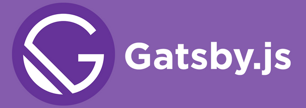

1Ghent University – imec – IDLab, Belgium
2Department of Computer and Information Science (IDA) — Linköping University, Sweden
Requests require the query parameter.
GraphQL query must be URL-encoded.
We can just query them via the command-line with tools like curl:
curl "https://metaphysics-production.artsy.net/\ ?query=%7Barticles%7Btitle%20author%7Bname%7D%7D%7D"
Outputs JSON:
{"data":{"articles":[{"title":" 5 questions for Liao Zhixin ",...
The query can be passed as application/json body.
curl \
-X POST \
-H "Content-Type: application/json" \
-d '{ "query": "{articles{title author{name}}}" }' \
https://metaphysics-production.artsy.net/
Outputs JSON:
{"data":{"articles":[{"title":" 5 questions for Liao Zhixin ",...
const query = `{
articles {
title
author { name }
}
}`;
fetch('https://metaphysics-production.artsy.net/', {
method: 'POST',
headers: {
'Content-Type': 'application/json',
'Accept': 'application/json',
},
body: JSON.stringify({ query, variables: { dice, sides } })
})
.then(r => r.json())
.then(data => console.log('data returned: ', data));
apollo-fetch simplifies queryingAllows a fetcher to be created for a specific interface by URL.
const { createApolloFetch } = require('apollo-fetch');
const url = 'https://metaphysics-production.artsy.net/';
const fetch = createApolloFetch({ url });
fetch({
query: `{
articles {
title
author { name }
}
}`,
variables: { ... },
}).then(res => console.log(res.data));
const FetchQL = require('fetchql');
const url = 'https://metaphysics-production.artsy.net/';
var fetch = new FetchQL({ url })
fetch({
query: `{
articles {
title
author { name }
}
}`,
variables: { ... },
}).then(res => console.log(res.data));
A generic GraphQL client that can be plugged into various frameworks.
For example: React, Angular, Vue, ...
import ApolloClient from "apollo-boost";
const uri = "https://metaphysics-production.artsy.net/";
const client = new ApolloClient({ uri });
client.query({
query: gql`{
articles {
title
author { name }
}
}`
}).then(res => console.log(res.data));
Adding the ApolloProvider to your React app
import { ApolloProvider } from "react-apollo";
const App = () => (
<ApolloProvider client={client}>
<div>
<h2>My first Apollo app 🚀</h2>
</div>
</ApolloProvider>
);
import { Query } from "react-apollo";
import { gql } from "apollo-boost";
const Articles = () => (
<Query query={gql`{
articles {
title
author { name }
}
}`}>
{({ loading, error, data }) => {
if (loading) return <p>Loading...</p>;
if (error) return <p>Error :(</p>;
return data.articles.map(({ title, author }) => (
<div key={title}>
<p>{title}: {author.name}</p>
</div>
));
}}
</Query>);
Cache: Client-side caching for repeated queries (in-memory or custom)
Link: An abstract way of getting a GraphQL operation result
Generates Progressive Web App: pre-builds pages for faster serving.
Client-side JavaScript can still make pages dynamic.
Support various datasources including GraphQL.

Useful for quickly testing out queries
Query easily sent using HTTP-supporting tools (e.g. curl)
Hide away HTTP interactions (e.g. accept header)
Syntactical sugar and convenience functions for faster development